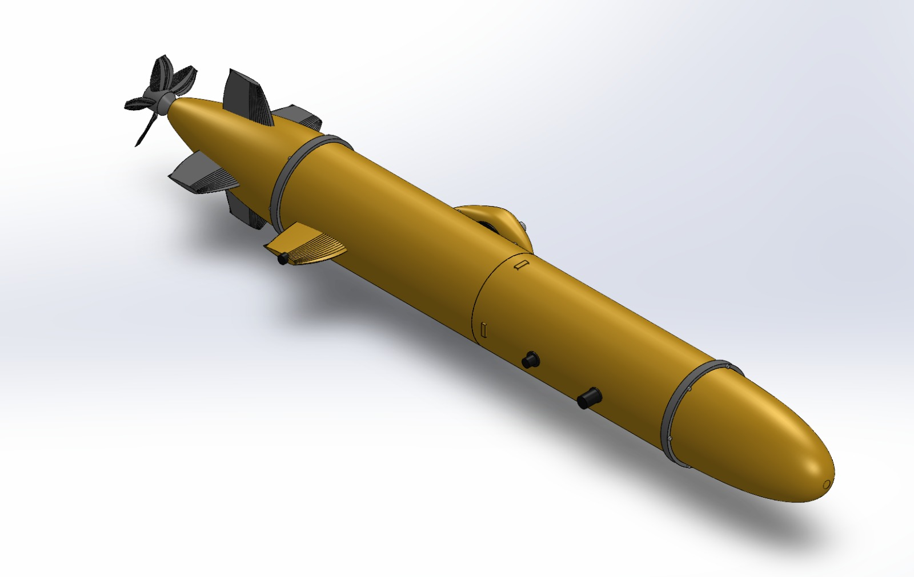
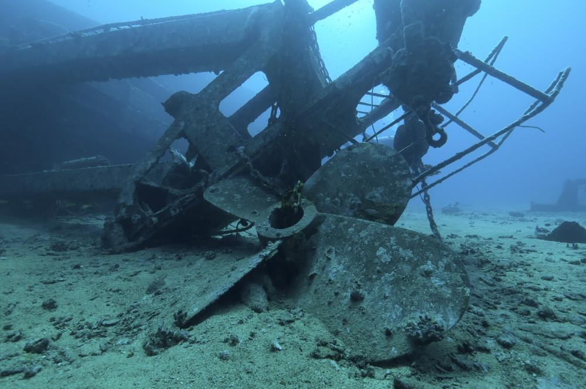
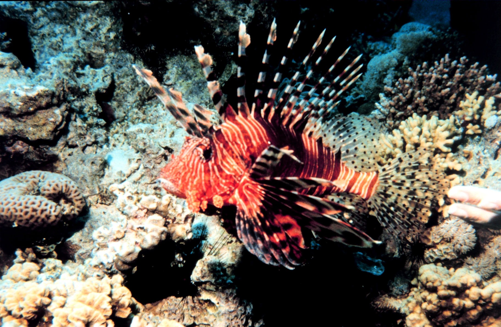
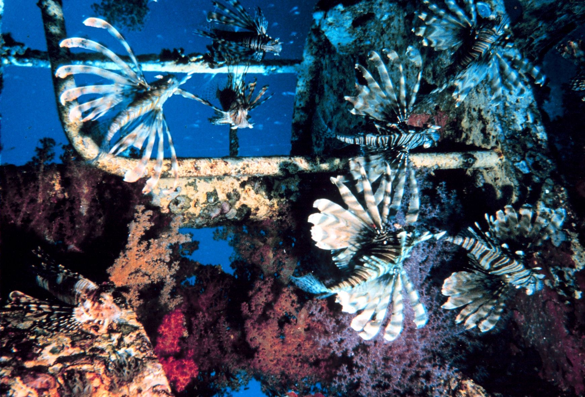
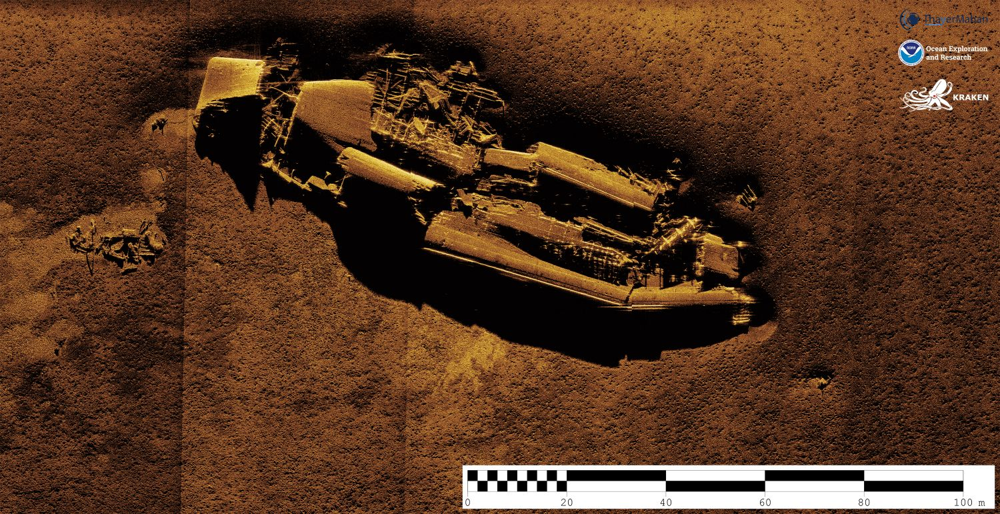

AUV
Autonomous Underwater Vehicle
An autonomous underwater vehicle concept for underwater object detection, hazard assessment, explainable decision support and inspection prioritization.

- Target operating depth
- 1–30 m below the water surface (concept)
- Sensing
- Multibeam echosounder, water-column acoustic data and onboard sensors
- Output
- Risk-assessed targets with an explained decision and a recommended action
About the AUV
An autonomous underwater vehicle built around the team's own design. It surveys an area underwater, detects objects, assesses whether they may be hazardous, explains each decision and tells the operator which targets to inspect first.
The problem
Coastal and offshore waters hold marine life, natural features and man-made objects side by side: shipwrecks, debris, lost equipment and, in some areas, old ordnance. Some of these are hazards to navigation or to people working in the water; most are not.
Different sensing methods provide different types of information about underwater targets. Acoustic sensing can remain useful in poor visibility, while target interpretation still requires analysis of multiple characteristics. No single sensing source answers the question “what is this object, and is it a hazard?” on its own.
What the system does
The AUV concept surveys an area in parallel lines and combines acoustic and onboard sensor data to detect underwater targets. Each target is analysed, classified and given a risk level, a risk type and a decision with an explanation. When the evidence is not enough, the system reports the object as unknown and asks for verification instead of forcing a class.
Targets are marked and reported to the operator at the surface.

Operating environment
Target operating depth for the concept: 1–30 metres below the water surface. This is a conceptual range; the physical vehicle has not been tested or certified across it.
How it works
From the water to the operator: the AUV senses its surroundings, detects targets, classifies them, assesses their potential risk, explains each decision and recommends an action.
Underwater Environment
The survey area, 1–30 m below the surface (concept).
Sensor / Acoustic Data
Multibeam echosounder data, water-column acoustic data and onboard sensor data.
Target Detection
Candidate objects are found in the sensor data and given a target ID and a detection time.
Target Feature Analysis
Shape, geometry, structure, size category, movement and difference from the background are examined.
Object Classification
Marine life, man-made structure or potential hazardous object — or unknown when the evidence is not enough.
Risk Assessment
Non-hazardous, potential hazard (or high potential hazard), or unknown and requiring verification.
Risk Type Identification
For example navigation / obstruction risk or potential explosive hazard.
Explainable Decision
A decision together with the evidence and the rule that led to it.
Target Marking
The target is marked at its position on the survey map.
Recommended Action
Continue the survey, inspect the target, or verify it.
Local Data Storage
Target records and raw sensor data are stored on board.
Data Transfer / Operator System
Priority target records reach the operator at the surface.
Sensing and communication
Multibeam Echosounder
Seafloor mapping, bathymetric information and acoustic target detection.
Water-Column Acoustic Data
Acoustic returns within the water column, used to detect potential targets.
Onboard Sensors
Sensor data used to support target detection and analysis. Exact sensor specifications are TBD.
Underwater Acoustic Communication Conceptual
Links the AUV with the operator and the surface system. It is separate from the sensing layer: sensors observe the environment, while communication carries the results. Communication specifications: TBD.
Classification, risk and decision
Each target is analysed from its shape, geometry, structure, size category, movement where applicable, acoustic characteristics and difference from the surrounding background. The classification, the risk assessment and the recommended action are kept as three separate results.
Non-Hazardous
Marine life, and objects with no immediate hazard. Decision: continue survey / log observation.
Potential Hazard
Wrecks, obstructions and other man-made structures. Decision: requires inspection. A potential mine is a high potential hazard; it always requires verification and is never reported as confirmed.
Unknown — Requires Verification
Objects without enough evidence for a reliable class. The system says “unknown” instead of guessing. Decision: requires verification.
| Feature | Evidence |
|---|---|
| Rigid / geometric structure | Detected |
| Non-biological appearance | Detected |
| Biological morphology | Not detected |
| Size category | Large |
| Acoustic return differs from surrounding background | Detected |
- Classification
- Man-Made Structure
- Risk
- Potential Hazard
- Risk type
- Navigation / Obstruction Risk
- Decision
- Requires Inspection
Potential risk is expressed as a priority for the operator to review; the system does not determine danger with certainty. The decision engine in this prototype is rule-based and explainable. Trained recognition models are future development and are not part of it.
Verification and background comparison
Multi-pass verification Conceptual
- First pass
- Target detected
- Additional pass, from another angle
- Evidence comparison
- Decision update
A suspicious target is passed again from the neighbouring survey line, so it is seen from another angle. The two observations are compared before the decision is updated. In the demo this appears as a conceptual multi-angle consensus; no trained model is involved.
Environmental / acoustic background Conceptual
A detected return is compared with the surrounding seafloor and water column. A return that stands out from its background is stronger evidence that an object is present. In the demo this comparison is a simulated evidence item; no trained anomaly-detection model is claimed.
Data transfer Conceptual
Underwater links carry little data, so the concept keeps large raw sensor data on board and sends compact target records first.
- Sensors
- Onboard Processing
- Target Detection
- Target Analysis
- Target Record
- Local Storage
- Data Prioritization / Compression
- Underwater Acoustic Communication
- Surface / Operator System
Sent first: priority event data
Kept on board
Raw and large sensor datasets stay in onboard storage for later retrieval. Communication specifications (range, bandwidth, modem, protocol): TBD.
Selected Red Sea fish
Marine-life recognition is shown with selected Red Sea species. It separates marine life from man-made objects and potential hazards; it does not attempt to recognise every species. The demo uses the lionfish as its marine-life example.


AUV design
The AUV is built around the team's own hull design: a streamlined, torpedo-shaped body with tail fins and a propeller. In the official view, move over the image to inspect the details.
- Saudi greenPrimary accent
- WhiteHull and markings
- Restrained goldDetail lines
- Platform
- Autonomous Underwater Vehicle
- Target operating depth
- 1–30 m — concept
- Sensing
- Multibeam echosounder, water-column acoustic data, onboard sensors
- Processing
- Onboard data processing — concept
- Communication
- Underwater acoustic communication — concept; specifications TBD
- Detection
- Underwater object detection
- Decision
- Explainable risk assessment
- Survey
- Grid / parallel-line survey
The concept visualization keeps the official geometry and image unchanged. It proposes a Saudi-inspired identity around the vehicle: green and white accents, restrained gold detailing and a geometric pattern drawn from Saudi visual heritage. It is a presentation concept, not a new vehicle design.
Interactive demo
Software simulation of the proposed AUV mission: a grid survey that detects underwater objects, assesses their potential risk and explains every decision.
- Scanning
- Detection
- Analysis
- Classification
- Risk assessment
- Decision
- Alert & marking
- Verification
Survey area — grid
Simulated navigation dataSurvey coverage
Simulation estimateTarget Observation
Reference image — not a live feed
Analysis
Simulation / concept demonstrationTarget log
| Target | Detected | Identification | Classification | Risk | Decision | Detected by | Line, bearing (Sim.) | Position (Sim.) | Depth (Sim.) |
|---|
Demonstration Video
A short walkthrough of the AUV interactive prototype.
Project materials
Supporting material for the AUV project.